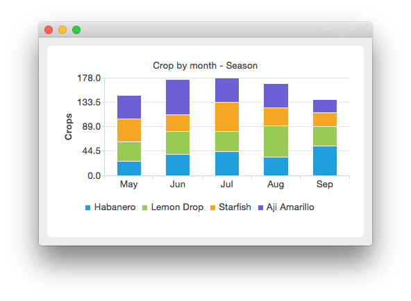
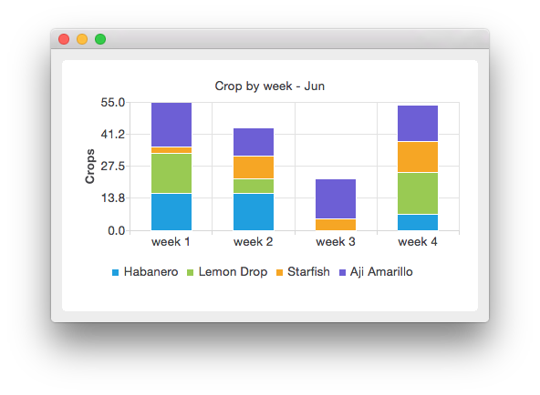

Implementing Drilldown
Note: This is part of the Charts with Widgets Gallery example.
Here we create a stacked bar chart, which shows the harvest of various chili peppers during season. In season view the harvest is grouped by month. To drill down to weekly view, right-click the selected month. On weekly view, the harvest of the month clicked is shown by week.
The season view looks like this:

Clicking on a month shows that month's harvest:

First we define a drilldown series class, which adds categories to the stacked bar series and mapping for categories to other drilldown series. The purpose of the drilldown series is to contain knowledge of the drilldown structure. The mapDrilldownSeries function maps the category to a given series. We can request the mapping for a category with the drilldownSeries(int category) function.
class StackedDrilldownSeries : public QStackedBarSeries { Q_OBJECT public: StackedDrilldownSeries(const QStringList &categories, int maxValue, QObject *parent = nullptr); void mapDrilldownSeries(int index, StackedDrilldownSeries *drilldownSeries); StackedDrilldownSeries *drilldownSeries(int index) const; QStringList categories() const; int maxValue() const; private: QMap<int, StackedDrilldownSeries *> m_drilldownSeries; QStringList m_categories; int m_maxValue = 0; };
Next we define our own drilldown chart, which implements the handler for the mouse click. All QBarSeries derived classes send out the clicked(QBarSet*, int) signal when a series is clicked with the mouse. The parameter QBarSet contains the pointer to the clicked bar set and parameter int contains the index of the clicked category.
class StackedDrilldownChart : public QChart { Q_OBJECT public: explicit StackedDrilldownChart(QGraphicsItem *parent = nullptr, Qt::WindowFlags wFlags = {}); void changeSeries(StackedDrilldownSeries *series); public slots: void handleClicked(int index, QBarSet *); private: StackedDrilldownSeries *m_currentSeries = nullptr; QBarCategoryAxis *m_axisX = nullptr; QValueAxis *m_axisY = nullptr; };
Now we have our drilldown classes and we can start using them. First create the chart.
auto drilldownChart = new StackedDrilldownChart; drilldownChart->setAnimationOptions(QChart::SeriesAnimations);
We define the categories from which the drilldown series will be constructed.
// Define categories const QStringList months = { "May", "Jun", "Jul", "Aug", "Sep" }; const QStringList weeks = { "week 1", "week 2", "week 3", "week 4" }; const QStringList plants = { "Habanero", "Lemon Drop", "Starfish", "Aji Amarillo" };
To create the drilldown structure, we first create our top level series, which we call seasonSeries. For each month in seasonSeries we create a drilldown series called weeklySeries which contains more detailed data for that month. In weeklySeries, we use the drilldown handler to bring us back to seasonSeries. To do so we add mapping to the series. The seasonSeries is mapped to weeklySeries for each month. Every weeklySeries is mapped back to the seasonSeries. To make mapping work, we connect the clicked signals from our series to the drilldownChart.
// Create drilldown structure auto seasonSeries = new StackedDrilldownSeries(months, 320, drilldownChart); seasonSeries->setName("Crop by month - Season (Click on bar to drill down)"); // Each month in season series has drilldown series for weekly data for (int month = 0; month < months.count(); month++) { // Create drilldown series for every week auto weeklySeries = new StackedDrilldownSeries(weeks, 80, drilldownChart); seasonSeries->mapDrilldownSeries(month, weeklySeries); // Drilling down from weekly data brings us back to season data. for (int week = 0; week < weeks.count(); week++) { weeklySeries->mapDrilldownSeries(week, seasonSeries); weeklySeries->setName(QString("Crop by week - " + months.at(month))); } // Use clicked signal to implement drilldown QObject::connect(weeklySeries, &StackedDrilldownSeries::clicked, drilldownChart, &StackedDrilldownChart::handleClicked); } // Enable drilldown from season series using clicked signal QObject::connect(seasonSeries, &StackedDrilldownSeries::clicked, drilldownChart, &StackedDrilldownChart::handleClicked);
When we have our drilldown structure ready, we can add the data to it. Here we generate a random crop for each plant in each week. The monthly crop is calculated from weekly crops and is set as value to the monthly series.
// Fill monthly and weekly series with data for (const QString &plant : plants) { auto monthlyCrop = new QBarSet(plant); for (int month = 0; month < months.count(); month++) { auto weeklyCrop = new QBarSet(plant); for (int week = 0; week < weeks.count(); week++) *weeklyCrop << QRandomGenerator::global()->bounded(20); // Get the drilldown series from season series and add crop to it. seasonSeries->drilldownSeries(month)->append(weeklyCrop); *monthlyCrop << weeklyCrop->sum(); } seasonSeries->append(monthlyCrop); }
Here we set the chart to show the top level series initially.
// Show season series in initial view drilldownChart->changeSeries(seasonSeries); drilldownChart->setTitle(seasonSeries->name());